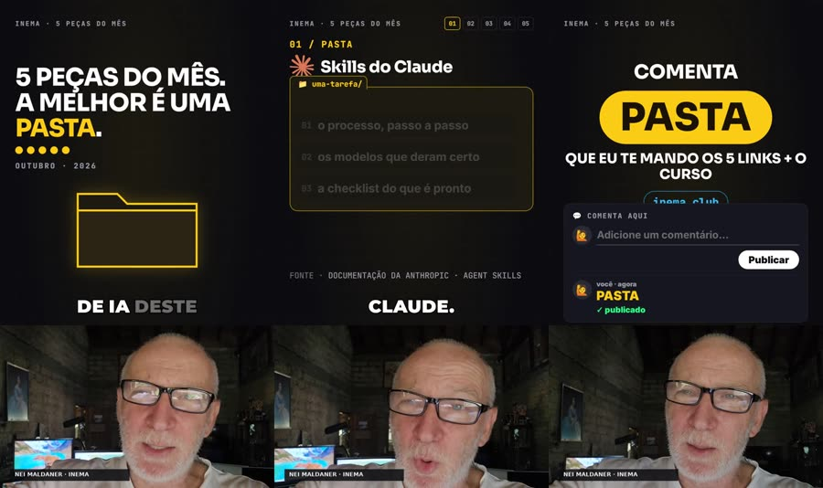

The “N pieces” reel, featuring Nei’s real face
You write a roteiro.json; rtex returns a 1080×1920 vertical reel: the thesis written on frame 0, numbered pieces with an index, proof with a source, an honest caveat, and a single request: “comment PASTA” (folder). Nei’s avatar speaks on HeyGen.

rtex is the engine Nei uses to make INEMA reels (short vertical videos) with his own face: his avatar on HeyGen speaks the script, and the engine overlays the screens, word-by-word captions, and end card. Each video follows a fixed “N pieces” format, from the opening frame with the thesis to the request “comenta PASTA” (comment PASTA). A validator, an automated critic, and QA check the format before publishing. The code is open for study and adaptation; to make your own video, you need your own HeyGen avatar, as well as Python, Node, ffmpeg, and Whisper.
A fixed format, with the real presenter
The top two-thirds show the content; the bottom third shows Nei speaking throughout the reel. Every number has a source on screen, and yellow appears as a surface only once: on the word the video asks viewers to comment.

🎙️ Nei’s real avatar
The speech goes to the HeyGen studio through the subscription; the avatar video comes back, Whisper timestamps each word, and the engine fits the screens and captions to that timing.
🧩 Pieces format
Thesis on frame 0, social proof with a number, “N pieces” with a visible index, numbered method, proof, caveat, takeaway after a silence, and “comment WORD.”
✅ Three checks
The validator enforces the rules; a critic (claude -p) scores the script; QA measures duration, pacing, volume, screen changes per minute, silence, end card, and yellow.
The nine blocks in the rtex format
In this order. The checar command rejects the script if a required block is missing or out of place.
- tese (thesis): written on frame 0 (up to 9 words, with the hook word highlighted), with something moving in the first second.
- autoridade (authority): social proof with a number; the counter lands on the source value.
- problema (problem): the pain shown through an object (in the example, a chat being crossed out).
- virada (turn): announce “N pieces”; the 01–N index appears before the first item and becomes pills at the top.
- metodo (method): numbered items, one object per item, label “0N / NAME.”
- prova (proof): a fact with a source that confirms what came before.
- ressalva (caveat): limitations, spoken and readable, turned into an instruction.
- maxima (maxim): a short antithesis, after 0.6–0.75 s of silence (voice and music disappear).
- cta (call to action): “comment WORD,” the same word as the thesis; the card stays up for 9 s after the last word.
Quick glossary
Hook word
The word the video asks viewers to comment (here, PASTA). It is the thesis, appears on frame 0, and is the video’s only yellow pill.
Maxim
The summary line at the end, in antithesis (“Não é a IA que é burra. É a pasta que está vazia.” (AI isn’t stupid. The folder is empty.)), after a short silence.
Stage
The motor/palco.html page that draws the screens. The render records this page at 30 frames per second.
HeyGen and studio
HeyGen is the service that generates the video of the avatar speaking. rtex uses the studio (the website, through the subscription) in a browser open on the virtual display :99.
Karaoke captions
The captions light up word by word in sync with the speech, with keywords in color.
LUFS
A measure of perceived loudness. −14 LUFS is the loudness social platforms use as their standard.
CTA
“Call to action”: the video’s final request. Here, there is only one: “comment WORD.”
Whisper and Playwright
Whisper transcribes the voice and timestamps each word. Playwright opens the stage in a browser and records each frame.
Critic and reviewer
The critic is a claude -p process that scores each script block. The independent reviewer is another session that only looks at the result.
QA and contact sheet
QA (“quality assurance”) is the command that measures the finished video. The contact sheet is an image it assembles from 16 video frames, so you can check everything at once.
Pill
A label with rounded corners. Pills 01–05 at the top show which piece the video is on; the yellow pill marks the hook word.
Bot and queue
Only on Nei’s machine: the bot is the Telegram robot that receives the video for him to watch; the queue publishes one video every 2 hours to the YouTube channel specified in the script.
What changes compared with r7ex
rtex starts from the r7ex v1.1.0 engine (copied, not imported: changing one does not affect the other). The machinery stays; the script and screen change.
| r7ex | rtex | |
|---|---|---|
| Script | 7 trigger stages: numbered hook → fear → desire → ease → discovery → benefit → comment | 9 pieces blocks: thesis → authority → problem → turn → method → proof → caveat → maxim → cta |
| Opening | title drawn on the opening image | the thesis written on frame 0, with the hook word highlighted |
| Avatar | half-screen at the bottom for the hook, then in the corner | in the lower third throughout the reel; the top two-thirds show the content |
| On-screen structure | panels timed to the speech, counter | 01–N index that becomes pills at the top, “0N / NAME” label on each piece |
| Honesty | — | required caveat before the maxim; every number has a source verified within the last 7 days |
| Ending | comment “tá tudo no inema.club” | silence, maxim in antithesis, “comment WORD” (the word = the thesis), 9-second card |
| Color | black + TV-news yellow | INEMA black with limited yellow: one yellow surface, the hook pill (QA counts it) |
| Kept | avatar through the HeyGen studio, karaoke captions, speech pacing, Whisper, critic + independent reviewer, publishing queue with timer, and sending to the Telegram bot (the last two, only on Nei’s machine) | |
From script to video.mp4
rtex.py runs each step. The avatar is the slow part: the studio can take minutes or hours to deliver the video.
Script checked
checar enforces block order, index = method, speech without numerals or “!”, a source for every number, hook = thesis, and an estimated duration of 60–90 s. critico assigns a score.
Avatar and timing
The speech goes to the studio; the video comes back, Whisper timestamps the words, the speech is sped up to ~182 words/min (by no more than 12%), and silence is added before the maxim.
Scene, render, and QA
cena links each screen to a spoken word; render records the stage, places the avatar at the bottom, and adds the music; qa measures everything and creates the contact sheet.
What needs to be on the machine
The engine was made for Nei’s machine (Linux). The paths below are in the code; on another machine, use the variables listed or adjust the file.
Avatar: HeyGen through the studio
A HeyGen account with your avatar and voice. The studio opens in a browser window, so you need a display: the virtual display :99 (Xvfb). Once: (1) log in to a Playwright browser profile; (2) in the studio, create a video project with the exact name TEMPLATE-AVATAR16 (or another name in RTEX_HEYGEN_TEMPLATE), using your avatar and voice: the engine opens this project, chooses “edit as new,” and replaces the speech; (3) put your HeyGen API key in the file used for downloads (fixed path in heygen/heygen-estudio-baixar.mjs; it only checks the status and downloads the video).
npx playwright open --user-data-dir ~/.cache/inemaccbot/perfil-heygen https://app.heygen.com # log in; or use another dir in RTEX_HEYGEN_PERFIL mkdir -p ~/projetos/openpcbotv2 echo "HEYGEN_API_KEY=sua-chave" >> ~/projetos/openpcbotv2/.env
Whisper (inemavox)
inematds/inemavox in ~/projetos/inemavox (or another path in CS_INEMAVOX). rtex tries the resident Whisper service on port 7871 and, if it is unavailable, runs inemavox’s transcrever_v1.py with large-v3 (about 10 GB on an NVIDIA graphics card). The resident Whisper Python interpreter comes from CS_WHISPER_PY; the default points to a chatterbox conda environment on Nei’s machine, so point it to yours.
git clone https://github.com/inematds/inemavox ~/projetos/inemavox # dependencies: see the inemavox README export CS_WHISPER_PY=/caminho/do/seu/python3
Node, ffmpeg, Python
Node 18+, ffmpeg with ffprobe, Python 3 with Pillow, numpy, and cairosvg, the DejaVu font (the fonts-dejavu-core package, used in the name label), and the logged-in claude CLI for the critic. Product logos (for example, Claude’s in the sample script) come from an open package that ferramentas/logos.sh downloads once to ~/.cache/r7ex/lobe-icons; without it, the prints step stops.
git clone https://github.com/inematds/rtex cd rtex npm i npx playwright install chromium pip install --user pillow numpy cairosvg # or inside a venv bash ferramentas/logos.sh # logos -> ~/.cache/r7ex/lobe-icons Xvfb :99 -screen 0 1920x1080x24 & # only for the HeyGen studio
python3 rtex.py fazer <pasta> --de seu-video.mp4. The speech in the video must match the script by at least 85% (the engine checks with Whisper). This path does not require HeyGen, a key, or Xvfb. Whisper listens in Portuguese; for a reel in another language, use CS_LANG=en or CS_LANG=es.enviar sends the video to Nei’s Telegram bot (bin/enviar_bot_v3.mjs) and fila puts the video in the r7ex publishing queue (~/projetos/r7ex/fila/fila.py, or RTEX_FILA). On a machine other than Nei’s, stop at qa and publish however you prefer.From topic to checked video
Each edition lives in edicoes/<data>-<slug>/. The fazer shortcut (step 9) runs checar, prints, avatar, cena, render, and qa in one go.
Create the edition you
Copy the sample script (the first edition) into a new folder dated today. The sample’s sources were checked on 28/10/2026, and checar rejects sources older than 7 days: replace them with your own in step 2.
python3 rtex.py novo minha-edicao # -> edicoes/AAAA-MM-DD-minha-edicao/roteiro.json
Write the script and add sources you
Check each number against its source that day and record it in fontes[] with valor and verificado_em. Then write the blocks (format in “O roteiro.json”), the full spoken text, and the hook.
Validate and run the critic
checar applies fixed rules. critico asks a claude -p process, through the subscription, to assign scores: pass with no blockers, thesis (the hook) ≥ 8, average ≥ 7.5, and no block below 6. It writes critica.json.
python3 rtex.py checar edicoes/AAAA-MM-DD-minha-edicao python3 rtex.py critico edicoes/AAAA-MM-DD-minha-edicao
Approve and send the avatar you
The request is sent only with written approval for this production in avatar/APROVADO_HEYGEN (one avatar per reel). After submission, the speech is frozen: fix text errors in the captions (the script’s trocas field), not by generating another avatar.
mkdir -p edicoes/AAAA-MM-DD-minha-edicao/avatar echo "ok para este reel" > edicoes/AAAA-MM-DD-minha-edicao/avatar/APROVADO_HEYGEN python3 rtex.py avatar-enviar edicoes/AAAA-MM-DD-minha-edicao # writes avatar/video_id.txt
Take screenshots of the pages
Capture real screenshots of the cited GitHub pages and the logos. Open and read the screenshots before continuing.
python3 rtex.py prints edicoes/AAAA-MM-DD-minha-edicao
Preview without an avatar optional
While the studio is working, use a copy of the folder to create synthetic timings, a scene, and a few individual frames (in seconds). Find layout errors before the avatar arrives. The preview does not contact the studio or use another avatar.
rm -rf /tmp/previa && cp -r edicoes/AAAA-MM-DD-minha-edicao /tmp/previa python3 ferramentas/tempos_sinteticos.py /tmp/previa python3 rtex.py cena /tmp/previa node motor/render.mjs /tmp/previa --quadros 1,10,20 # -> /tmp/previa/q_1.jpg, q_10.jpg, q_20.jpg
Download the avatar and adjust the pacing
avatar-conferir checks once (ready or processing). avatar waits, downloads, timestamps the words with Whisper, speeds up the speech to ~182 words/min, adds silence before the maxim, and keeps the end card up for 9 s.
python3 rtex.py avatar-conferir edicoes/AAAA-MM-DD-minha-edicao python3 rtex.py avatar edicoes/AAAA-MM-DD-minha-edicao python3 rtex.py avatar edicoes/AAAA-MM-DD-minha-edicao --de avatar.mp4 # reuse an mp4
Scene, render, and QA
The stage at 30 fps, avatar in the lower third, music, and −14 LUFS in two passes; QA writes build/qa.json and the contact sheet build/folha.jpg with 16 frames.
python3 rtex.py cena edicoes/AAAA-MM-DD-minha-edicao python3 rtex.py render edicoes/AAAA-MM-DD-minha-edicao # -> video.mp4 python3 rtex.py qa edicoes/AAAA-MM-DD-minha-edicao
Or do it all at once
checar → prints → avatar → cena → render → qa. It does not run critico (step 3). Without --de and a ready avatar, it submits to the studio itself and waits up to ~290 min for HeyGen.
python3 rtex.py fazer edicoes/AAAA-MM-DD-minha-edicao python3 rtex.py fazer edicoes/AAAA-MM-DD-minha-edicao --de seu-video.mp4 # without the studio
Review, revise, and deliver you
Read the contact sheet and qa.json; ask someone who did not write the script to review it. The hook’s promise must be fulfilled on the day. On Nei’s machine, enviar sends it to the bot and fila adds it to the channel queue (never uploads directly).
python3 rtex.py enviar edicoes/AAAA-MM-DD-minha-edicao python3 rtex.py fila edicoes/AAAA-MM-DD-minha-edicao
The script format, at a glance
A shortened excerpt from the first edition (the // lines are not valid JSON; the full file is in modelo/roteiro.json). The file stays in Portuguese, as in the original.
{
"versao": "rtex/1", "tema": "5 peças de IA do mês — a melhor é uma pasta",
"isca": { "palavra": "PASTA", "entregavel": "os 5 links e o curso do inema.club..." },
"fontes": [ { "id": "ecc", "url": "https://github.com/affaan-m/ECC", "valor": "291 mil", "verificado_em": "2026-10-28" } ],
"trocas": { "é cê cê": "ECC", "cinco peças": "5 peças" },
"blocos": [
{ "tipo": "tese", "fala": "A melhor peça de IA deste mês é só uma pasta. E a quarta nem é de IA.",
"tela": { "linhas": ["5 PEÇAS DO MÊS.", "A MELHOR É UMA PASTA."], "destaque": "PASTA" },
"objeto": { "comp": "tese" } },
// ... autoridade, problema, virada ...
{ "tipo": "metodo", "n": 1, "nome": "PASTA", "fonte": "skills",
"fala": "Um: as Skills do Claude. Uma pasta por tarefa, com o processo, os modelos e a checklist.",
"objeto": { "comp": "pasta", "params": { "titulo": "Skills do Claude" } } },
// ... metodo 2–5, prova, ressalva ...
{ "tipo": "maxima", "fala": "Não é a IA que é burra. É a pasta que está vazia.", "objeto": { "comp": "maxima", "params": { "linha1": "NÃO É A IA QUE É BURRA.", "linha2": "É A PASTA QUE ESTÁ VAZIA." } } },
{ "tipo": "cta", "fala": "Comenta pasta que eu te mando os cinco links, com o curso do inema ponto club.",
"objeto": { "comp": "isca", "params": { "palavra": "PASTA" } } }
]
}
Main fields
tipo (the order of the nine blocks) · fala (written out in full, with no numerals or “!”) · tela (large text and highlight) · objeto.comp + objeto.params (what the stage draws) · n and nome in method items (matching the turn index) · fonte (an id in fontes). At the top level: trocas (how the speech appears in captions), cores (colored words), ritmo, and publicar (title, description, queue channel). checar also requires: in the maxim, linha1 and linha2 with no more than 7 words each; the hook word in publicar.descricao; sources checked no more than 7 days ago.
Stage components (objeto.comp)
tese, contador, chat_riscado, indice (with progress pills), pasta, repo (real screenshot + stars), manchete, selo_prova, ressalva, maxima (typographic flash), and isca (the yellow pill with the comment box).
“5 novidades de IA do mês: a mais útil é uma pasta” (5 AI updates this month: the most useful one is a folder)
The first edition, made entirely with the engine and published on YouTube. Hook: PASTA. Script in edicoes/2026-10-28-cinco-pecas-ia/roteiro.json.
What QA measured
| Duration | 81,1 s |
| Resolution | 1080×1920 · 30 fps |
| Speech pace | 180 words/min |
| Volume | −14,0 LUFS |
| Screen changes | 36 per minute |
| Longest static segment | 3,5 s |
| Silence before the maxim | 0,58 s |
| End card | 9,0 s |
| Yellow surfaces | 1 (the hook) |
Frame by frame


The contact sheet generated by QA

Where the project stands
What is in the repository today and what comes later.
/rtex skill, long mode (110–135 s), light version, and automatic delivery of the hook.